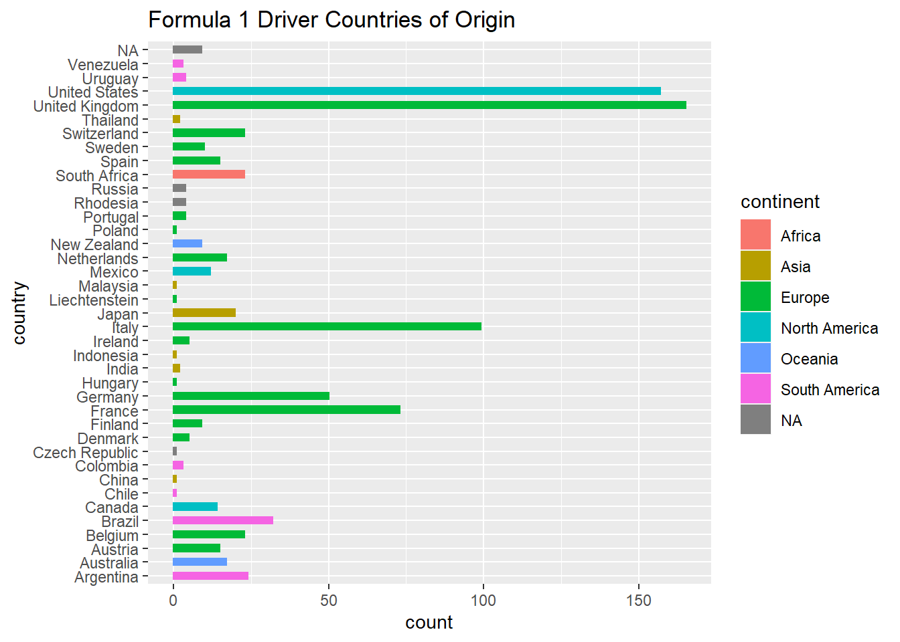
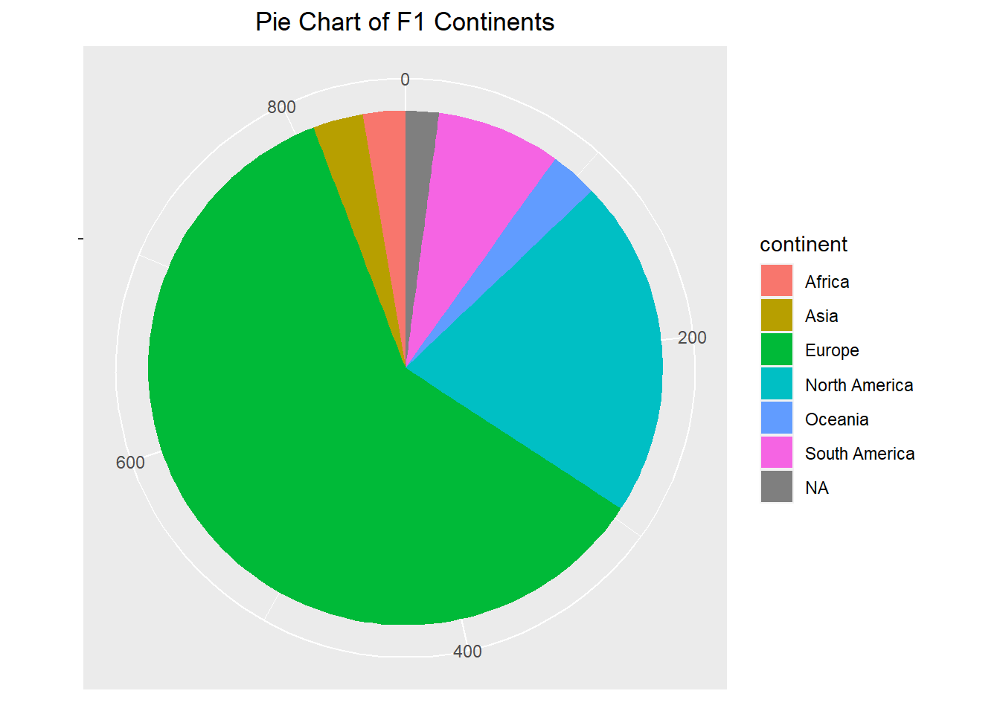
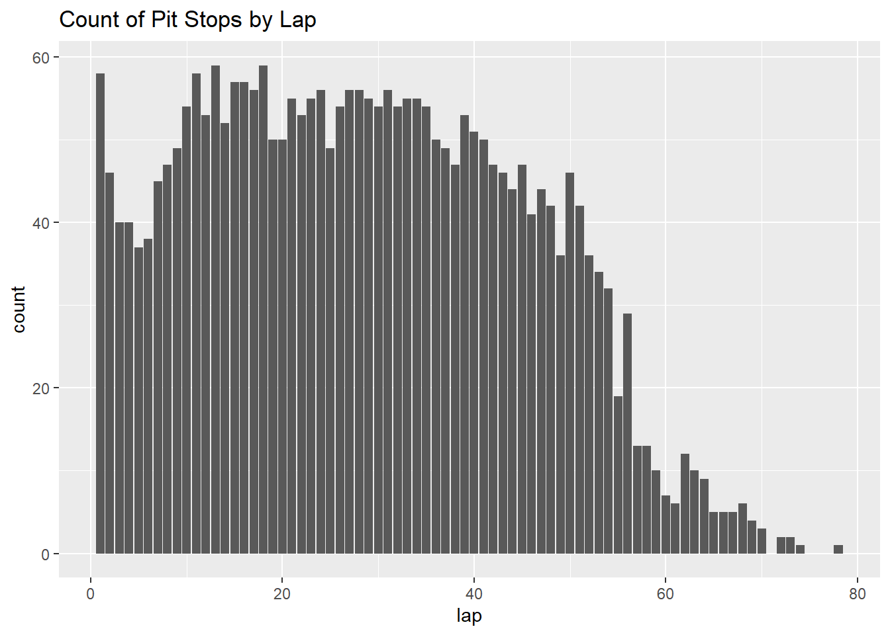
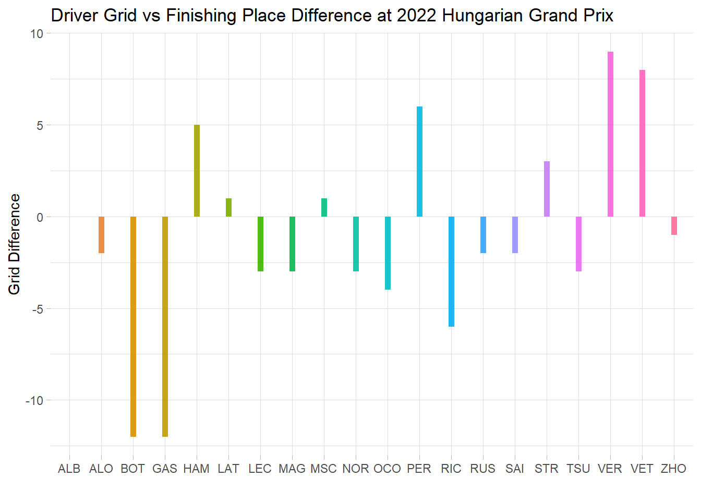

My project aims to utilize some of the skills learned in DACSS 601 (Data Science Fundamentals) on a dataset of my choosing. With said dataset, the next goal is to ask a research question that can be looked into using tools learned within the course, as well as previous knowledge of statistics. The dataset I chose provides data on Formula 1 drivers, races, circuits, results, and more from every championship since 1950. The first task is to think of a question that can be asked to the dataset, knowing what kind of data exists within.
Research Question
As someone who is not incredibly knowledgeable in Formula 1, only getting into the sport in the past year, the first few months learning about all the drivers, circuits, etc., was incredibly overwhelming. I am deeply interested in visualizations that allow lots of data to be shown in a simple and digestible way. So my primary goal for this project is to show that I can create beginner visualizations that can be valuable to people who may not know anything about Formula 1.
For a formal research question, I want to learn more about the background of drivers, as I know becoming a Formula 1 driver is an incredibly strenuous and expensive journey. With the dataset having nationality data, a simple question that can be asked of the dataset is if there is a dominant nationality of the drivers throughout Formula 1’s history. From there, conclusions can be made as to if the sport is diverse, and if there is equal opportunity for a majority of backgrounds when it comes to becoming a driver.
Read in data
The dataset consists of multiple tables. Based on the naming conventions of the CSV files, it is easy to read in the ones needed. The tables being loaded are the results of each specific grand prix, the information on each driver, the information on the different circuits, data on every single pitstop, and lastly a status code dictionary that indicate what the result of a race was for a driver (i.e., finished, disqualified, etc.)
Generated by summarytools 1.0.1 (R version 4.2.1) 2022-09-04
Tidy Data
The dataset as a whole is already quite tidy in my eyes. However, there are two issues I have with the workability that can easily be amended. The creator of the dataset used IDs for both the drivers and statuses in order to make cross referencing between tables and merging them easier. But for the purpose of visualizing information for someone not knowledgeable of the dataset, this is an issue. This means that the table needs work to be done before being used to visualize. A simple full join and then removing the columns not needed via subset should do the trick.
Code
f1_results <- f1_results %>%full_join(f1_drivers, by ="driverId")f1_results =subset(f1_results, select =-c(number.x, number.y, url, nationality, dob))f1_results <-merge(f1_results, status_codes, by ="statusId")head(f1_results)
Another table that could be modified is the pit stops data. It is quite a long table, due to entailing every single pitstop per driver, per race. I wanted to make this easier to work with by taking out the actual time data, as I was only interested in the amount of stops per race. By pivoting wider, I can change each race into its own column, and then the driver’s stops in any given lap will be detailed in that row. With this setup, I can see what stop number of that race that was in that specific lap. Something I was attempting to do was to omit all values per race, per driver, lower than the maximum amount of stops to show a simple way to view the number of stops in a race. While this would make the table cleaner, there is no reason practically to do this as I can simply use the maximum as arguments in any visualizations/calculations I want to do. However, it would make the table look cleaner and line up with the original goal of mine (simply detailing the # of stops), so I will continue to find a solution. In the mean time, having access to the lap data will allow me to create different visualizations, such as showing who stopped during a specific lap, as well as which number of stop it was for that driver
One issue present with the dataset, as it pertains to the research question, is the labeling of the “nationality” column. To perform analysis on the specific country, as well as continent, of the drivers, it is necessary to import a dictionary that can convert nationality to country, and then one that will add continent. One of my goals is to show the analysis not just at a country level, but continent as well, so adding these two dictionaries can allow me to do so with an initially limited dataset.
As a result of merging (using an outer join in order to not lose data) by “nationality”, and then “country”, we can now see the driver’s country of origin itself, as well as continent. This will simplify the creation of visualizations.
Visualizations
The first visualization to create for the research question is a simple chart that shows the distribution of nationalities of the racers. An easy way to present this would be a histogram.
Code
ggplot(f1_drivers, aes(y = country, color = continent, fill = continent)) +geom_bar(width =.5 ) +labs(title ="Formula 1 Driver Countries of Origin")

Code
pie <-ggplot(f1_drivers, aes(x ="", fill =factor(continent))) +geom_bar(width = .1) +theme(axis.line =element_blank(), plot.title =element_text(hjust=0.5)) +labs(fill="continent", x=NULL, y=NULL, title="Pie Chart of F1 Continents",) pie +coord_polar(theta ="y", start=0)

With just two simple charts, it is immediately apparent how dominant Europe is in the sport. The US also has an incredibly large presence, especially when compared to other countries of similar size.
Next, lets look into the pitstop and result tables that were sorted earlier.
Code
ggplot(pit_stops, aes(lap))+geom_bar() +labs(title ="Count of Pit Stops by Lap")

Code
race_1086 <- f1_results %>%filter(raceId ==1086)race_1086$grid_diff <-as.numeric(race_1086$grid) -as.numeric(race_1086$position)ggplot(race_1086, aes(x=code, y=grid_diff)) +geom_segment( aes(x=code, xend=code, y=0, yend=grid_diff, color = code), size=2, alpha=0.9) +theme_light() +theme(legend.position ="none",panel.border =element_blank(), ) +xlab("") +ylab("Grid Difference") +labs(title ="Driver Grid vs Finishing Place Difference at 2022 Hungarian Grand Prix")

Reflection and Conclusion
The results from the nationality analysis are to be expected. For those unaware, it is incredibly expensive to become a Formula 1 driver, meaning likely only those with privileged backgrounds have the opportunity to compete in the sport. Thus, seeing exclusively first world countries, and some of the wealthiest ones with the most presnese, is to be expected. However, seeing the visualizations can shed some light on how much (or little, depending on your perspective) diversity there is within the sport. With this dataset, lots of more interesting nationality analysis can be done. Reflecting now, my next goal would likely be categorizing racers by the seasons they were active, and then visualizing the trends of which countries have more or less active drivers as the seasons go on, likely as a standard plot. A line of best fit could be used to determine if the overall presense of a specific country is increasing or decreasing as time goes on.
For the pitstop data, I initially believed pivoting wider would be a simple way to work with the data. While it did properly make the data wider, it actually was more difficult to work with, having many NA values and not initially doing what I intended (that is, simply showing the number of pit stops per race per driver). In the future, I would simplify this by grouping the data, and then slicing if necessary.
Lastly, the result data. I only decided to look at one race just to test the waters. Creating the table and beginning analysis proved that it can be incredibly powerful to work with. The visualization I created came from the difference of a driver’s starting position (known as grid), and their finishing place. I did this because a few racers did incredibly well, given their starting position, and others did poorly. The lollipop bar chart I created can show this difference well. I anticipate myself going back to this project and continuing analysis using that table as I become more comfortable not just in R, but also with my understanding of Formula 1.
All in all, this project was a blast to work on I feel it encapsulated my learning in 601 well, showing a lot of fundamental skills from data tidying, editing tables, and making simple visualizations. This project also pushed me to do a lot of research on what can be done with R, looking through documentation for many packages and getting ideas on how to progress further. I see this specific assignment as a living document, something that I can go back to and work on as I further my education in R. The techniques and theories as of now (9/02/22) are very introductory, very fundamental, but immensely valuable. I am incredibly excited to see what else I can do with the same dataset as I become more and more comfortable and knowledgeable in R.
Formula 1 Data: https://www.kaggle.com/datasets/rohanrao/formula-1-world-championship-1950-2020
R Programming Language: R Core Team (2020). R: A language and environment for statistical computing. R Foundation for Statistical Computing, Vienna, Austria. URL https://www.R-project.org/.
Textbook: Wickham, H., & Grolemund, G. (2016). R for data science: Visualize, model, transform, tidy, and import data. OReilly Media.
Source Code
---title: "Final Project"author: "Tyler Tewksbury"desription: "Formula 1 Championship Data"date: "09/03/2022"format: html: toc: true code-fold: true code-copy: true code-tools: truecategories: - final---```{r}#| label: setup#| warning: false#| message: falselibrary(tidyverse)library(summarytools)knitr::opts_chunk$set(echo =TRUE, warning=FALSE, message=FALSE)```## Project OverviewMy project aims to utilize some of the skills learned in DACSS 601 (Data Science Fundamentals) on a dataset of my choosing. With said dataset, the next goal is to ask a research question that can be looked into using tools learned within the course, as well as previous knowledge of statistics. The dataset I chose provides data on Formula 1 drivers, races, circuits, results, and more from every championship since 1950. The first task is to think of a question that can be asked to the dataset, knowing what kind of data exists within.## Research QuestionAs someone who is not incredibly knowledgeable in Formula 1, only getting into the sport in the past year, the first few months learning about all the drivers, circuits, etc., was incredibly overwhelming. I am deeply interested in visualizations that allow lots of data to be shown in a simple and digestible way. So my primary goal for this project is to show that I can create beginner visualizations that can be valuable to people who may not know anything about Formula 1. For a formal research question, I want to learn more about the background of drivers, as I know becoming a Formula 1 driver is an incredibly strenuous and expensive journey. With the dataset having nationality data, a simple question that can be asked of the dataset is if there is a dominant nationality of the drivers throughout Formula 1's history. From there, conclusions can be made as to if the sport is diverse, and if there is equal opportunity for a majority of backgrounds when it comes to becoming a driver. ## Read in dataThe dataset consists of multiple tables. Based on the naming conventions of the CSV files, it is easy to read in the ones needed. The tables being loaded are the results of each specific grand prix, the information on each driver, the information on the different circuits, data on every single pitstop, and lastly a status code dictionary that indicate what the result of a race was for a driver (i.e., finished, disqualified, etc.)```{r}f1_results<-read_csv("_data/f1_data/results.csv",show_col_types =FALSE)f1_drivers<-read_csv("_data/f1_data/drivers.csv",show_col_types =FALSE)status_codes<-read_csv("_data/f1_data/status.csv",show_col_types =FALSE) races<-read_csv("_data/f1_data/races.csv",show_col_types =FALSE)pit_stops<-read_csv("_data/f1_data/pit_stops.csv",show_col_types =FALSE)```## Table Summaries```{r}print(dfSummary(f1_results, varnumbers =FALSE, plain.ascii =FALSE, style ="grid", valid.col =FALSE),method ='render', table.classes ='table-condensed')print(dfSummary(f1_drivers, varnumbers =FALSE, plain.ascii =FALSE, style ="grid", valid.col =FALSE), method ='render', table.classes ='table-condensed')print(dfSummary(races, varnumbers =FALSE, plain.ascii =FALSE, style ="grid", valid.col =FALSE), method ='render', table.classes ='table-condensed')print(dfSummary(pit_stops, varnumbers =FALSE, plain.ascii =FALSE, style ="grid", valid.col =FALSE), method ='render', table.classes ='table-condensed')```## Tidy Data The dataset as a whole is already quite tidy in my eyes. However, there are two issues I have with the workability that can easily be amended. The creator of the dataset used IDs for both the drivers and statuses in order to make cross referencing between tables and merging them easier. But for the purpose of visualizing information for someone not knowledgeable of the dataset, this is an issue. This means that the table needs work to be done before being used to visualize. A simple full join and then removing the columns not needed via subset should do the trick.```{r}f1_results <- f1_results %>%full_join(f1_drivers, by ="driverId")f1_results =subset(f1_results, select =-c(number.x, number.y, url, nationality, dob))f1_results <-merge(f1_results, status_codes, by ="statusId")head(f1_results)```Another table that could be modified is the pit stops data. It is quite a long table, due to entailing every single pitstop per driver, per race. I wanted to make this easier to work with by taking out the actual time data, as I was only interested in the amount of stops per race. By pivoting wider, I can change each race into its own column, and then the driver's stops in any given lap will be detailed in that row. With this setup, I can see what stop number of that race that was in that specific lap. Something I was attempting to do was to omit all values per race, per driver, lower than the maximum amount of stops to show a simple way to view the number of stops in a race. While this would make the table cleaner, there is no reason practically to do this as I can simply use the maximum as arguments in any visualizations/calculations I want to do. However, it would make the table look cleaner and line up with the original goal of mine (simply detailing the # of stops), so I will continue to find a solution. In the mean time, having access to the lap data will allow me to create different visualizations, such as showing who stopped during a specific lap, as well as which number of stop it was for that driver ```{r}pit_stops <-merge(pit_stops, f1_drivers[,c( 1:4)])pit_stops =subset(pit_stops, select =-c(time, duration, milliseconds, driverRef, number))pit_stops %>%group_by(raceId) %>%group_by(max(stop))pit_stops <- pit_stops %>%pivot_wider(names_from ="raceId",values_from ="stop")```## Build Workable TablesOne issue present with the dataset, as it pertains to the research question, is the labeling of the “nationality” column. To perform analysis on the specific country, as well as continent, of the drivers, it is necessary to import a dictionary that can convert nationality to country, and then one that will add continent. One of my goals is to show the analysis not just at a country level, but continent as well, so adding these two dictionaries can allow me to do so with an initially limited dataset.```{r}demonyms <-read.csv(url("https://raw.githubusercontent.com/knowitall/chunkedextractor/master/src/main/resources/edu/knowitall/chunkedextractor/demonyms.csv"))continents <-read.csv(url("https://raw.githubusercontent.com/dbouquin/IS_608/master/NanosatDB_munging/Countries-Continents.csv"))colnames(demonyms) <-c("nationality", "country")colnames(continents) <-c("continent", "country")continents$country[168] <-"United States"f1_drivers <-merge(f1_drivers, demonyms, by ="nationality", all.x =TRUE)f1_drivers <-merge(f1_drivers, continents, by ="country", all.x =TRUE)```As a result of merging (using an outer join in order to not lose data) by "nationality", and then "country", we can now see the driver's country of origin itself, as well as continent. This will simplify the creation of visualizations.## VisualizationsThe first visualization to create for the research question is a simple chart that shows the distribution of nationalities of the racers. An easy way to present this would be a histogram.```{r}ggplot(f1_drivers, aes(y = country, color = continent, fill = continent)) +geom_bar(width =.5 ) +labs(title ="Formula 1 Driver Countries of Origin")pie <-ggplot(f1_drivers, aes(x ="", fill =factor(continent))) +geom_bar(width = .1) +theme(axis.line =element_blank(), plot.title =element_text(hjust=0.5)) +labs(fill="continent", x=NULL, y=NULL, title="Pie Chart of F1 Continents",) pie +coord_polar(theta ="y", start=0)```With just two simple charts, it is immediately apparent how dominant Europe is in the sport. The US also has an incredibly large presence, especially when compared to other countries of similar size. Next, lets look into the pitstop and result tables that were sorted earlier.```{r}ggplot(pit_stops, aes(lap))+geom_bar() +labs(title ="Count of Pit Stops by Lap")race_1086 <- f1_results %>%filter(raceId ==1086)race_1086$grid_diff <-as.numeric(race_1086$grid) -as.numeric(race_1086$position)ggplot(race_1086, aes(x=code, y=grid_diff)) +geom_segment( aes(x=code, xend=code, y=0, yend=grid_diff, color = code), size=2, alpha=0.9) +theme_light() +theme(legend.position ="none",panel.border =element_blank(), ) +xlab("") +ylab("Grid Difference") +labs(title ="Driver Grid vs Finishing Place Difference at 2022 Hungarian Grand Prix")```## Reflection and ConclusionThe results from the nationality analysis are to be expected. For those unaware, it is incredibly expensive to become a Formula 1 driver, meaning likely only those with privileged backgrounds have the opportunity to compete in the sport. Thus, seeing exclusively first world countries, and some of the wealthiest ones with the most presnese, is to be expected. However, seeing the visualizations can shed some light on how much (or little, depending on your perspective) diversity there is within the sport. With this dataset, lots of more interesting nationality analysis can be done. Reflecting now, my next goal would likely be categorizing racers by the seasons they were active, and then visualizing the trends of which countries have more or less active drivers as the seasons go on, likely as a standard plot. A line of best fit could be used to determine if the overall presense of a specific country is increasing or decreasing as time goes on. For the pitstop data, I initially believed pivoting wider would be a simple way to work with the data. While it did properly make the data wider, it actually was more difficult to work with, having many NA values and not initially doing what I intended (that is, simply showing the number of pit stops per race per driver). In the future, I would simplify this by grouping the data, and then slicing if necessary.Lastly, the result data. I only decided to look at one race just to test the waters. Creating the table and beginning analysis proved that it can be incredibly powerful to work with. The visualization I created came from the difference of a driver's starting position (known as grid), and their finishing place. I did this because a few racers did incredibly well, given their starting position, and others did poorly. The lollipop bar chart I created can show this difference well. I anticipate myself going back to this project and continuing analysis using that table as I become more comfortable not just in R, but also with my understanding of Formula 1. All in all, this project was a blast to work on I feel it encapsulated my learning in 601 well, showing a lot of fundamental skills from data tidying, editing tables, and making simple visualizations. This project also pushed me to do a lot of research on what can be done with R, looking through documentation for many packages and getting ideas on how to progress further. I see this specific assignment as a living document, something that I can go back to and work on as I further my education in R. The techniques and theories as of now (9/02/22) are very introductory, very fundamental, but immensely valuable. I am incredibly excited to see what else I can do with the same dataset as I become more and more comfortable and knowledgeable in R. ## BibliographyContinent Data: https://github.com/dbouquin/IS_608/blob/master/NanosatDB_munging/Countries-Continents.csvDemonym Data: https://github.com/knowitall/chunkedextractor/blob/master/src/main/resources/edu/knowitall/chunkedextractor/demonyms.csvFormula 1 Data: https://www.kaggle.com/datasets/rohanrao/formula-1-world-championship-1950-2020R Programming Language: R Core Team (2020). R: A language and environment for statistical computing. R Foundation for Statistical Computing, Vienna, Austria. URL https://www.R-project.org/.Textbook: Wickham, H., & Grolemund, G. (2016). R for data science: Visualize, model, transform, tidy, and import data. OReilly Media.